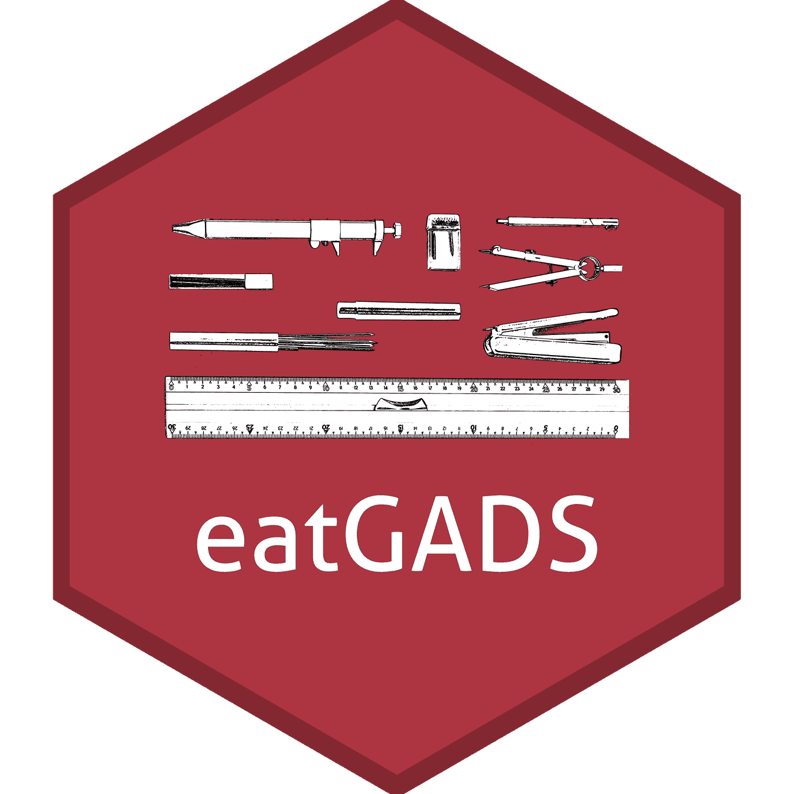

eatGADS - Datenaufbereitung
2024-11-12
Agenda
- eatGADS - Basics
- Hintergrund
- Grundlegendes
- Übersicht Funktionalität
- eatGADS im BT-Kontext
- Aufbereitungsziel
- Häufig verwendete Funktionen
- Best Practices
eatGADS: Hintergrund
eatGADS - Scope
- Datenbankerstellung
- Datenbanknutzung
eatGADS - Scope
- Datenbankerstellung
- Datenbanknutzung
- (teil-automatisierte) Datenaufbereitung
Ursprüngliche Idee
R statt SPSS in der Datenaufbereitung
- keine proprietäre Software
- bessere Automatisierungsmöglichkeiten
- bessere Integration mit dem eat-Versum
eatGADS

Ressourcen
eatGADS: Grundlegendes
GADSdat-Objekte
Liste bestehend aus
- rohen Daten (
dat) - und Meta-Daten (
labels)
GADSdat-Objekte
Liste bestehend aus
- rohen Daten (
dat)- numerische Variablen
- character Variablen (Zeichenfolgen)
- Meta-Daten (
labels)varName- VariablennamevarLabel- Variablenlabelformat- SPSS-Formatvalue- numerischer WertvalLabel- Wertelabelmissings- Missingtags (missodervalid)
GADSdat-Objekte
Daten

GADSdat-Objekte
Meta-Daten

GADSdat-Objekte
Import und Export
Variablennamen
Anzeigen von Variablennamen im Datensatz via namesGADS()
Meta-Daten
Extraktion von Meta-Daten via extractMeta()
varName varLabel format display_width labeled value
2 idstud Student-ID F8.0 NA no NA
5 schtype School track F8.0 NA yes 1
6 schtype School track F8.0 NA yes 2
7 schtype School track F8.0 NA yes 3
valLabel missings
2 <NA> <NA>
5 Gymnasium (academic track) valid
6 Realschule valid
7 schools with several courses of education validMeta-Daten
Änderung von Meta-Daten
# Variablenname
pisa2 <- changeVarNames(pisa, oldNames = "idstud",
newNames = "IDSTUD")
# Variablenlabel
pisa2 <- changeVarLabels(pisa2, varName = "schtype",
varLabel = "Schulart")
# Wertelabel
pisa2 <- changeValLabels(pisa2, varName = "schtype",
value = 1, valLabel = "Gymnasium")
# Missingtag
pisa2 <- changeMissings(pisa2, varName = "schtype",
value = -99, missings = "miss")Meta-Daten
varName varLabel format display_width labeled value
1 IDSTUD Student-ID F8.0 NA no NA
4 schtype Schulart F8.0 NA yes -99
5 schtype Schulart F8.0 NA yes 1
6 schtype Schulart F8.0 NA yes 2
7 schtype Schulart F8.0 NA yes 3
valLabel missings
1 <NA> <NA>
4 <NA> miss
5 Gymnasium valid
6 Realschule valid
7 schools with several courses of education validDaten
Änderung von Daten
# Variable duplizieren
pisa3 <- cloneVariable(pisa2, varName = "schtype",
new_varName = "schtype_dich")
# Rekodierung
pisa3 <- recodeGADS(pisa3, varName = "schtype_dich",
oldValues = c(1, 2, 3),
newValues = c(1, 2, 2),
existingMeta = "drop")
# Anpassung Wertelabel
pisa3 <- changeValLabels(pisa3, varName = "schtype_dich",
value = 2, valLabel = "Nicht-Gymnasium")Daten
Übung
- Ladet den Datensatz
example_data.savaus dem eatFDZ Paket (© Annegret Rucker).
- Inspiziert die Meta-Daten der Variable
"books". - Vergebt sinnvolle Wertelabel und Missingtags, wo diese bisher fehlen.
- Bildet eine neue, dichotome Schulvariable (
"school_dich") mit1 = "nicht-Gymnasium"und2 = "Gymnasium".
Übersicht Funktionalität
Übersicht Funktionalität I
Import-Funktionen
import_spss()- Import von.savimport_stata()- Import von.dtaimport_DF()- Import vondata.framesimport_RDS()- Import von.RDSDateienimport_raw()- Direkt-Import von Rohdaten & Metadaten
Export-Funktionen
write_spss()- Export von.savwrite_spss2()- Alternativer Export von.savwrite_stata()- Export von.dtaextractData2()- Extraktion von Datensätzen innerhalbR
Übersicht Funktionalität II
Meta-Daten bearbeiten
getChangeMeta()- Extrahiert Änderungen in den Meta-DatenapplyChangeMeta()- Wendet Änderungen in den Meta-Daten anchangeVarLabels()- Änderungen VariablenlabelchangeValLabels()- Änderungen WertelabelchangeMissings()- Änderungen Missing-TagschangeVarNames()- Änderungen VariablennamenchangeSPSSformat()- Änderungen SPSS-FormatreuseMeta()- Wiederverwendung von Meta-DatenupdateMeta()- Aktualisiert Meta-Daten im Datensatz
Übersicht Funktionalität III
Grundlegende Daten-Struktur bearbeiten
extractVars()- Extraktion ausgewählter VariablenremoveVars()- Entfernen bestimmter VariablencloneVar()- Kopiert eine VariablerelocateVariable()- Verschiebt eine Variable an eine neue PositionorderLike()- Anordnung aller Variablen- …
Übersicht Funktionalität IV
Semi-automatisierte Funktionen
calculateScale()- Erstellen einer SkalacollapseMC_Text()- Rekodierung eines forced Choice Items mit FreitextmöglichkeitcollapseMultiMC_Text()- Rekodierung eines multiple Choice Items mit FreitextmöglichkeitcomposeVar()- Kombination unterschiedlicher InformationsquellenconvertCase()- Änderung Groß-/Kleinschreibungdummies2char()fac2dummies()multiChar2fac()- …
Übung
- Entfernt die Variablen
"ID_name"und"info"aus Anonymisierungsgründen vollständig aus dem Datensatz. - Bildet den Notendurchschnitt aus den bestehenden Notenvariablen (
"grade_<fach>").
Übersicht Funktionalität V
Vergleichs-Funktionen
equalGADS()- Abgleich zweierGADSdatObjekteinspectDifferences()- Datenunterschiede zweier VariableninspectMetaDifferences()- Meta-Datenunterschiede zweier VariablencompareGADS()
Übersicht Funktionalität VI
Check-Funktionen
checkVarNames()- Konventionen VariablennamenfixEncoding()- Umlaute & SonderzeichencheckMissings()- Abgleich Wertelabels & MissingtagscheckMissingsByValues()- Abgleich gelabelte numerische Werte & MissingtagscheckEmptyValLabels()- Abgleich Wertelabels & DatencheckMissingValLabels()- Abgleich Daten & Wertelabels
Check-Funktionen
Variablennamen
Konventionen Variablennamen
- → Automatisch beim Import
_vs.- Geschützte Wörter

Variablennamen
Konventionen Variablennamen
- → Automatisch beim Import
_vs.- Geschützte Wörter
Variablennamen
Test-Daten
Variablennamen
Test-Daten
varName varLabel value valLabel missings
1 ID Identifier NA <NA> <NA>
2 Ä_Größe <NA> 1 groß valid
3 Ä_Größe <NA> 2 klein valid
4 Ä_Qualität <NA> -99 Missing Unbekannt miss
5 Ä_Qualität <NA> -97 Missing by Design valid
6 Ä_Qualität <NA> -98 <NA> miss
7 Ort <NA> NA <NA> <NA>Sonderzeichen
Umlaute & Sonderzeichen umwandeln
- Variablenlabel, Wertelabel, Daten
ßzuss,äzuaeusw.- Vorbeugen von Encoding-Problemen
Sonderzeichen
Umlaute & Sonderzeichen umwandeln
Sonderzeichen
Umlaute & Sonderzeichen umwandeln
# Display specific columns of the labels data
aepfel$labels[, c("varName", "varLabel", "value", "valLabel", "missings")] varName varLabel value valLabel missings
1 ID Identifier NA <NA> <NA>
2 Ae_Groesse <NA> 1 gross valid
3 Ae_Groesse <NA> 2 klein valid
4 Ae_Qualitaet <NA> -99 Missing Unbekannt miss
5 Ae_Qualitaet <NA> -97 Missing by Design valid
6 Ae_Qualitaet <NA> -98 <NA> miss
7 Ort <NA> NA <NA> <NA>Abgleich Missingtags
Abgleich Wertelabels und Missingtags
- Alle Werte mit spezifischen Labels auch als Missing getagged?
- Alle als Missing getaggeden Werte auch spezifische Labels?
→ Reporting und/oder Anpassung
Abgleich Missingtags
Abgleich gelabelte numerische Werte und Missingtags
- Alle gelabelten Werte in spezifischem numerischen Range auch als Missing getagged?
→ Reporting und/oder Anpassung
Abgleich Wertelabels
Abgleich Daten und Wertelabels
- Alle Werte mit Wertelabels auch in Daten?
Abgleich Wertelabels
Abgleich Daten und Wertelabels
- Alle Werte in den Daten auch mit Wertelabels?
Übung
- Überprüft die Vergabe von Missingtags im Beispieldatensatz mithilfe der Funktionen
checkMissings()undcheckMissingsByValues(). - Überprüft, ob alle Wertelabels auch tatsächlich in den Daten vorkommen (
checkEmptyValLabels()). Sollten diese Wertelabel aus den Daten entfernt werden? - Überprüft, ob alle Werte auch tatsächlich gelabelet sind (
checkMissingValLabels()).
Danke für Eure
Aufmerksamkeit!

Datenaufbereitung